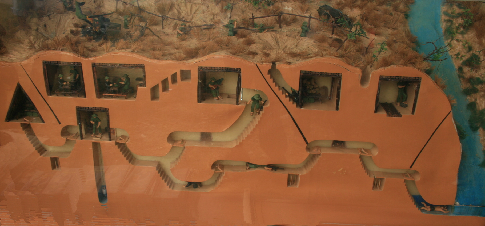
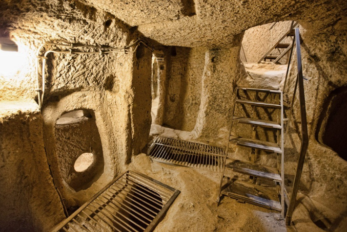

TP.HCM - Địa đạo Củ Chi
"Bạn biết không, Địa đạo Củ Chi được ví như một 'mê cung dưới lòng đất' kỳ vĩ bậc nhất, nơi minh chứng cho sự kiên cường, thông minh và tinh thần thép của quân dân ta trong thời kỳ chiến tranh. Không chỉ là di tích lịch sử quốc gia, nơi đây còn thu hút đông đảo du khách trong và ngoài nước đến khám phá."



Điểm nổi bật của Tour
- Khám phá hệ thống hầm ngầm: Chui hầm, tận mắt chứng kiến hệ thống giao thông hào, phòng họp, trạm xá và nhà bếp Hoàng Cầm sâu trong lòng đất.
- Trải nghiệm thực tế: Thử sức bắn súng thể thao tại trường bắn quốc phòng (nếu có nhu cầu) và tìm hiểu về các loại bẫy tự chế lịch sử.
- Thưởng thức ẩm thực vùng đất thép: Thưởng thức món khoai mì luộc chấm muối mè - món ăn quen thuộc của du kích ngày xưa.
Lịch trình tóm tắt (1 Ngày)
- Buổi sáng: Khởi hành từ TP.HCM đi Củ Chi - Xem phim tư liệu lịch sử - Khám phá hệ thống Địa đạo Ben Đình/Bến Dược.
- Buổi trưa: Thưởng thức ẩm thực đặc sản địa phương - Nghỉ ngơi tại chỗ.
- Buổi chiều: Trải nghiệm bắn súng thể thao (tùy chọn) - Mua sắm quà lưu niệm - Lên xe khởi hành về lại điểm xuất phát.
Giá trọn gói cho 1 khách:
1.200.000 VNĐ